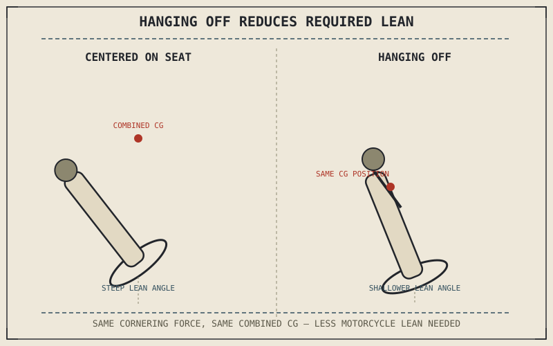

Chapter 9.1 established that the rider is load, not just input, and that body position measurably shifts the combined center of mass Chapter 8.3's lean-angle math depends on. Hanging off — shifting the torso and hips toward the inside of a corner while the motorcycle itself leans less than the rider's body does — is that same principle taken to its most deliberate, visible extreme.
Chapter 9.6 closed by naming body position in fast cornering as this chapter's subject, building on the line and lean established there. This chapter covers that subject.
Hanging Off Reduces Lean Angle for the Same Corner
Chapter 8.3 established that required lean angle depends on the combined center of mass balancing gravity against centripetal force, and Chapter 9.1 showed a rider's body position directly shifting that combined center of mass. Hanging off moves the rider's body mass toward the inside of the turn independently of the motorcycle's own lean, which lets the combined center of mass reach the position Chapter 8.3's balance requires at a shallower motorcycle lean angle than would be needed if the rider stayed centered on the seat. This buys real cornering clearance, the ceiling Chapter 4.7 described as set by whatever component hangs lowest, since the motorcycle itself isn't leaned as far even though the same cornering force and speed are being achieved.
Weighting the Outside Peg and Why It Matters
Pressing down on the outside footpeg while hanging off does real mechanical work beyond simply holding position: it helps stabilize the motorcycle's chassis against the same load-transfer forces Chapter 8.5 described, giving the suspension a more consistent, predictable load to work with through the corner rather than a rider's shifting weight adding unpredictable disturbance on top of what the tyre and suspension are already managing. This is a genuine chassis-stabilizing input, not simply a matter of riding style or appearance.
Hanging off isn't about looking committed in a corner — it's a rider deliberately shifting the combined center of mass Chapter 8.3's lean-angle math depends on, buying real cornering clearance by letting the motorcycle itself lean less for the identical cornering force.

A rider shown centered on the seat versus hanging off toward the inside of a corner, with the same combined center of mass position achieved at a visibly shallower motorcycle lean angle in the hanging-off position.
A Common Misconception, Cleared Up Early
It's easy to assume hanging off is purely a racing style choice, cosmetically dramatic but mechanically unnecessary on the street. The cornering-clearance benefit Chapter 4.7 already established is real at any speed where lean angle approaches a motorcycle's physical limits, not just at racing pace — a touring rider occasionally scraping a peg on a tight mountain road gets the same clearance benefit from a modest, controlled shift toward the inside of the seat that a racer gets from a more extreme version of the identical mechanical principle. The degree differs by context; the underlying physics doesn't.
Where This Leads
Everything this part has covered so far — braking, cornering, trail braking, body position — assumes real speed and the momentum that comes with it. Slow, tight maneuvering removes nearly all of that momentum and asks for a genuinely different skill set. Chapter 9.8 turns to low-speed control and U-turns next.
Key Concepts to Remember
- Hanging off shifts the rider's mass toward the inside of a turn, letting the combined center of mass reach the required position at a shallower motorcycle lean angle.
- Weighting the outside footpeg stabilizes the chassis against cornering load transfer, giving the suspension a more consistent, predictable load to manage.
- The cornering-clearance benefit of hanging off applies at any speed approaching a motorcycle's lean-angle limits, not only at racing pace.
Cross-References
| ← Ch. 9.1 | Established the rider's body position directly shifting the combined center of mass; this chapter shows hanging off as the most deliberate application of that principle. |
| ← Ch. 4.7 | Established cornering clearance as a hardware ceiling set by lean angle; this chapter shows hanging off directly buying more of that clearance. |
| ← Ch. 8.5 | Established cornering load transfer at the tyre; this chapter shows weighting the outside peg helping the chassis manage that same load transfer. |
| → Ch. 9.8 | Covers low-speed control and U-turns, where the momentum this chapter's techniques depend on is mostly absent. |